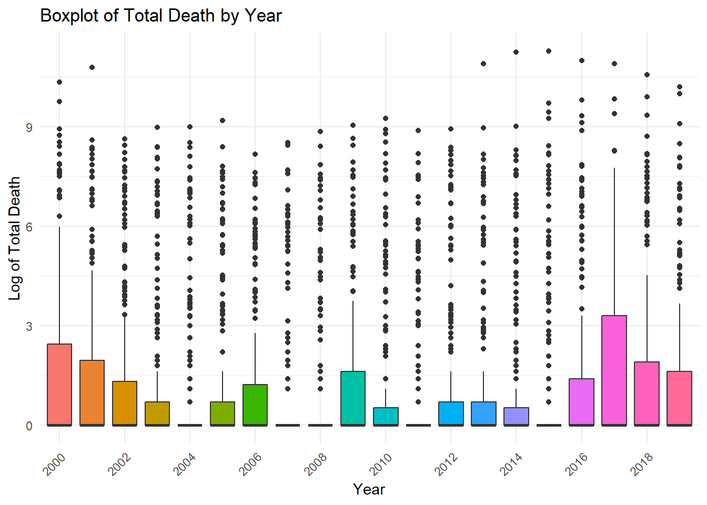

knitr::opts_chunk$set(message = FALSE, warning = FALSE)Exploratory Data Analysis: Armed Conflict
Exploring Means
Before I get into this, let’s load some libraries:
library(ggplot2)
library(dplyr)
library(knitr)
library(here)The first thing I want to do is explore how the mean deaths depend on the year and country. First, by country:
finaldata <- read.csv(here("output_files", "finaldata.csv"), header = TRUE)
country_means <- finaldata %>%
group_by(ISO) %>%
summarise(
mean_value = mean(totaldeath, na.rm = TRUE),
median_value = median(totaldeath, na.rm = TRUE),
sd_value = sd(totaldeath, na.rm = TRUE),
min_value = min(totaldeath, na.rm = TRUE),
max_value = max(totaldeath, na.rm = TRUE),
count = n()
) %>%
dplyr::arrange(desc(mean_value))
write.csv(country_means, file = here("output_files", "countrymeans.csv"), row.names = FALSE)
head(country_means)# A tibble: 6 × 7
ISO mean_value median_value sd_value min_value max_value count
<chr> <dbl> <dbl> <dbl> <int> <int> <int>
1 ETH 4023. 100 12351. 25 48183 20
2 SYR 2993. 0.5 5236. 0 14162 20
3 ERI 802. 0 3349. 0 15000 20
4 IRQ 687. 146 1467. 20 6573 20
5 MEX 420. 283 485. 0 1636 20
6 AFG 403. 180. 506. 42 1899 20Next, what I want to do is get a summary of each column, so that I can examine the NA values and get a sense of the magnitude of our data. This allowed me to realize there was a mistake in one of my previous files, so I could go back and impute 0.
country_name ISO region year
Length:3720 Length:3720 Length:3720 Min. :2000
Class :character Class :character Class :character 1st Qu.:2005
Mode :character Mode :character Mode :character Median :2010
Mean :2010
3rd Qu.:2014
Max. :2019
gdp1000 OECD OECD2023 popdens
Min. : 0.1105 Min. :0.000 Min. :0.0000 Min. : 0.00
1st Qu.: 1.2383 1st Qu.:0.000 1st Qu.:0.0000 1st Qu.:14.79
Median : 4.0719 Median :0.000 Median :0.0000 Median :27.52
Mean : 11.4917 Mean :0.171 Mean :0.1882 Mean :30.57
3rd Qu.: 13.1531 3rd Qu.:0.000 3rd Qu.:0.0000 3rd Qu.:40.72
Max. :123.6787 Max. :1.000 Max. :1.0000 Max. :99.86
NA's :62 NA's :20
urban agedep male_edu temp
Min. : 0.1025 Min. : 16.17 Min. : 1.067 Min. :-2.405
1st Qu.:17.2872 1st Qu.: 47.94 1st Qu.: 5.904 1st Qu.:12.928
Median :30.2535 Median : 55.51 Median : 8.368 Median :21.958
Mean :30.6948 Mean : 61.94 Mean : 8.258 Mean :19.625
3rd Qu.:41.6558 3rd Qu.: 77.11 3rd Qu.:10.849 3rd Qu.:25.869
Max. :93.4135 Max. :111.48 Max. :14.441 Max. :29.676
NA's :20 NA's :20 NA's :20
rainfall1000 totaldeath conflict under5
Min. :0.01993 Min. : 0.00 Min. :0.0000 Min. : 2.00
1st Qu.:0.59146 1st Qu.: 0.00 1st Qu.:0.0000 1st Qu.: 9.00
Median :1.01288 Median : 0.00 Median :0.0000 Median : 22.20
Mean :1.20216 Mean : 71.56 Mean :0.1358 Mean : 40.50
3rd Qu.:1.68706 3rd Qu.: 1.00 3rd Qu.:0.0000 3rd Qu.: 61.33
Max. :4.71081 Max. :48183.00 Max. :1.0000 Max. :224.90
NA's :20 NA's :20
matmort neonatal infant drought
Min. : 2.0 Min. : 0.80 Min. : 1.60 Min. :0.00000
1st Qu.: 17.0 1st Qu.: 4.90 1st Qu.: 7.60 1st Qu.:0.00000
Median : 66.0 Median :12.10 Median : 18.90 Median :0.00000
Mean : 210.6 Mean :16.18 Mean : 28.90 Mean :0.08737
3rd Qu.: 299.8 3rd Qu.:25.32 3rd Qu.: 44.52 3rd Qu.:0.00000
Max. :2480.0 Max. :60.90 Max. :138.10 Max. :1.00000
NA's :426 NA's :20 NA's :20
earthquake
Min. :0.00000
1st Qu.:0.00000
Median :0.00000
Mean :0.08333
3rd Qu.:0.00000
Max. :1.00000
Now, I will continue with my previous task. I am not too interested in the values of the mean deaths by year (unlike the countries), but I am somewhat interested in at least seeing if there is a trend. To plot, I used a log scale to account for the range in y-values, adding 1 to the death count to ensure that 0 counts map to 0. I added a boxplot, but since all of the medians were just 0, it resembled a bar graph.

Finally, I want to see the country-years with the highest death count. I know we defined conflict as a categorical variable, but I am just trying to see how much information we are losing by doing so.
# A tibble: 6 × 8
# Groups: ISO [3]
ISO year mean_value median_value sd_value min_value max_value count
<chr> <int> <dbl> <int> <dbl> <int> <int> <int>
1 ETH 2001 48183 48183 NA 48183 48183 1
2 ETH 2000 30000 30000 NA 30000 30000 1
3 ERI 2000 15000 15000 NA 15000 15000 1
4 SYR 2014 14162 14162 NA 14162 14162 1
5 SYR 2015 13953 13953 NA 13953 13953 1
6 SYR 2016 10776 10776 NA 10776 10776 1These results align with the Eritrean-Ethiopian war at the turn of the Millenium and the Syrian Civil War in the 2000s.
Now, let’s see what the values are for the outcomes at these years:
year ISO totaldeath under5 matmort neonatal infant
1 2000 ERI 15000 85.2 1280 27.0 56.1
2 2000 ETH 30000 140.7 1030 48.6 87.2
3 2001 ETH 48183 134.6 988 47.8 83.8
4 2014 SYR 14162 47.0 30 10.8 27.7
5 2015 SYR 13953 41.6 30 10.8 25.6
6 2016 SYR 10776 39.5 30 10.9 25.0 mean_matmort mean_under5 mean_neonatal mean_infant
1 564.6667 81.43333 25.98333 50.9To compare this, let’s see what the means are across the whole dataset:
mean_matmort mean_under5 mean_neonatal mean_infant
1 210.6178 40.49973 16.17789 28.89514Let’s go a little bit further. Let’s see how the means compare with the means in our binary conflict specification:
mean_matmort mean_under5 mean_neonatal mean_infant
1 468.3868 76.13782 27.88 51.79129Finally, we combine them all to visualize:
mean_matmort mean_under5 mean_neonatal mean_infant
Max Data 564.6667 81.43333 25.98333 50.90000
Conf_1 Data 468.3868 76.13782 27.88000 51.79129
All Data 210.6178 40.49973 16.17789 28.89514There doesn’t look to be that much of a difference!